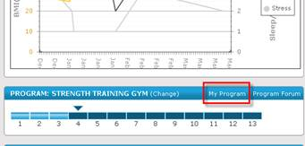
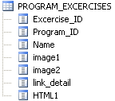
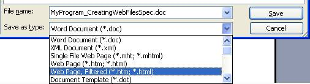
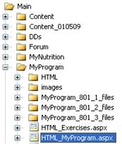
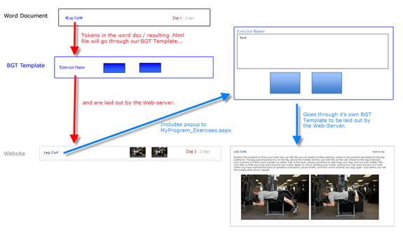

Project: Tri-Living-Well
Module: Site.
¾ Purpose: Describes Method for Creating HTML files from Program (Stage) word Docs.
Features:
Site Area:

Input:
¾ Word Doc with info for Stage
¾ 9 Program 13 Stages 3 levels = 351 Documents
1. Walking Tri|Living|Well
2. Running Tri|Living|Well
3. Swimming Tri|Living|Well
4. Cycling Tri|Living|Well
5. Strength Training Gym Tri|Living|Well
6. Strength Training Home Tri|Living|Well
7. Female Spec Gym Tri|Living|Well
8. Female Spec Home Tri|Living|Well
9. Cross Fit Tri|Living|Well
Step 1 – Create HTML Template File (Convert the word document to HTML)
- Rename Doc MyProgram_#PROGRAM_ID#_#STAGE_ID#.doc (MyProgram_101_1.doc)
- *Note: keep the original file untouched. <- Important
- Correct Format
- Tokens such as #EXERCISE_A#
- Tokens are Replaces as per SQL | Program_Exercises
- 
- Change the margins to Narrow.
- This will allow for your newly added images to not be scaled down by current margin restrictions.
- Replace Tables and Images with Snagit copied images
- If not: These cause problems when converting to .html so we should replace these items with images (SnagIt being the easiest way to do this). Before taking on this task, change the margins to Narrow. This will allow for your newly added images to not be scaled down by current margin restrictions.
- *Notes: keep the original open and constantly compare your changes so as to not disturb the original look.
- If not: These cause problems when converting to .html so we should replace these items with images (SnagIt being the easiest way to do this). Before taking on this task, change the margins to Narrow. This will allow for your newly added images to not be scaled down by current margin restrictions.
- FINISHED : File > Save As… >.
- In the dialogue box, change the type to Web Page, Filtered and save it as a .html file.

Step 2 – Moving the files to the web server
What we have at this Point
¾ 2 groups of files that need to be placed.
¾ a generated .html file itself, which goes in the web server directory path /Main/MyProgram/HTML.
¾ a folder with all of the misc files (images, etc. This folder should end in _files from word during the conversion), which should be placed in /Main/MyProgram/.
¾ And remember what we learned from dotnetDan.com *Note: You can never go wrong by making a backup of files if you are replacing them with the files you just created.
Step 3 – Testing 1 2 3
How the Web server Works
¾ HTML_MyProgram.aspx
o QueryString programID and stepID
§ Grabs associated "html template file"
§ Replaces Tokens Based on SQL| PROGRAM_EXERCISES
§ Send Modified Template file to Browser

